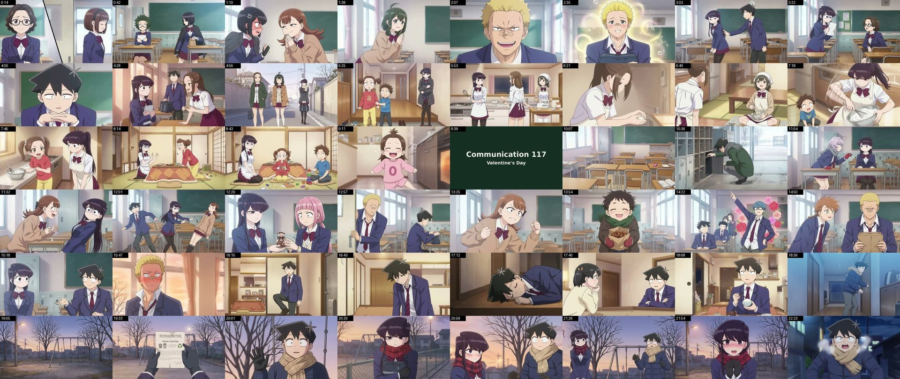
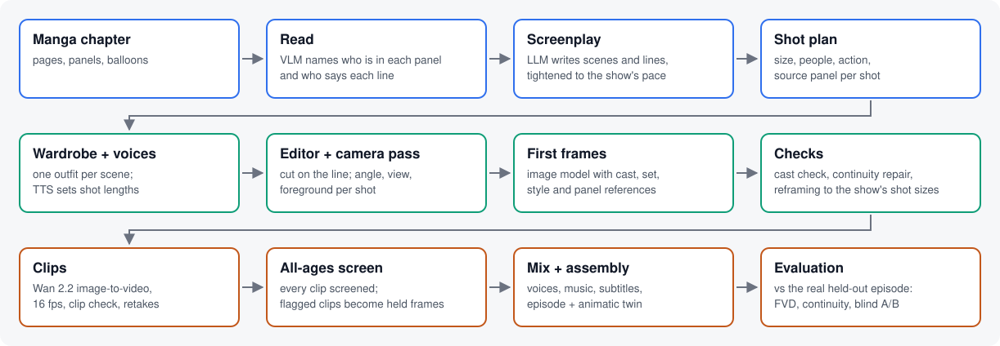
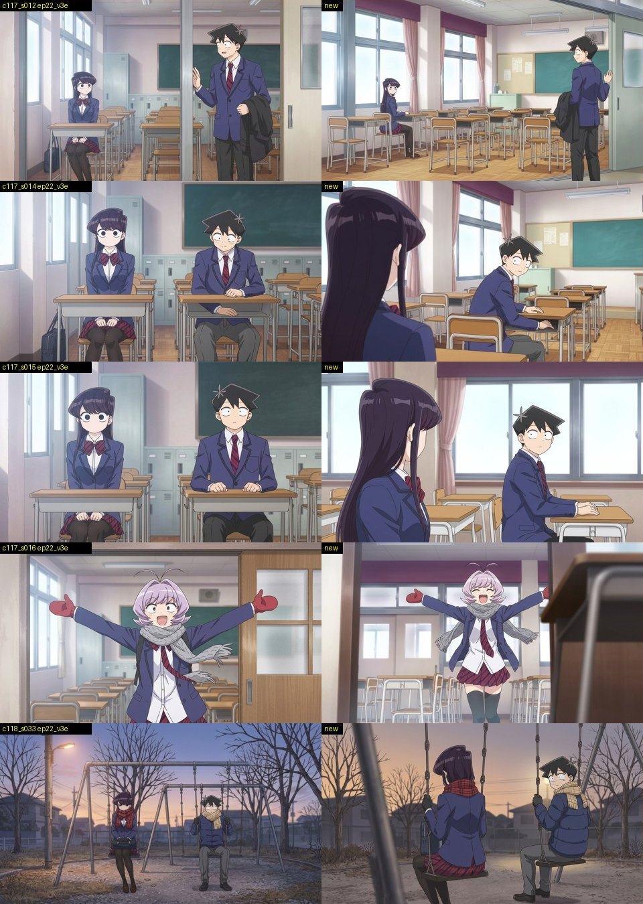

An open research pipeline that reads manga, writes a screenplay, plans shots, draws, animates and voices a full 22-minute episode on one GPU, and scores every stage against the real adaptation of the same chapters.
One moment, eight views: the manga panel, six generated versions from sprint 1 to sprint 5, and the shot of the real episode it is measured against.
Generated from held-out manga chapters. Silent, with the script as subtitles: the research build's voices are conditioned on the official dub and its music comes from the show, so neither is published.
Opening: a classroom, a narrator, three people who cannot say good morning. 32 s.
Valentine's morning: an empty shoe locker, an empty desk, an entrance. 29 s.
The park at dusk: "it's a friend chocolate". 37 s.

Forty-eight stills, one every 28 seconds of the episode.
Each grid shows the manga panel, the generated shot of every sprint, and the real anime shot that adapts the same moment. Twelve of them, with notes, in the evaluation.
Who is in the panel? Sprints 1 and 2 draw the wrong girl. From sprint 3, a vision model reads the chapter with character cards and the cast is right.
Framing. Sprint 4 drew this close-up as a boy at a desk in a wide room. Sprint 5 crops finished frames to shot sizes measured on the show.
Staging. Sprint 5 looks past one character's shoulder at the other, close to how the real shot is staged.
Language models read, write and direct; an image model draws first frames from reference pictures; a video model animates them; vision models check every frame and clip. Targets such as shot length, shot sizes and camera angles are measured on the training episodes.

Blind raters named stock-looking sets, costume details and flat staging first. The next cut shows the painter the school's real rooms, reads uniforms off the show's own character pictures, and adds a camera pass. In a blind test on 24 shots the new frame was closer to the show in 21 of 23 decided pairs.

Left: sprint 5. Right: the same shot in the sprint 6 test.
A full episode from four held-out manga chapters, compared with the real episode that adapts them.
| Sprint 1 | Sprint 2b | Sprint 3 | Sprint 4 | Sprint 5 | Real episode | |
|---|---|---|---|---|---|---|
| FVD against the real episode (lower is closer) | 470 | 326–333 | 346 | 514 | 390 | 321 (floor) |
| Cuts that stay in the same scene | — | 53 % | 76 % | 94 % | 92 % | 91 % |
| Continuity errors per 100 cuts | — | 7.1 | 10.0 | 1.6 | 2.3 | 1.2 |
| First frames accepted by the cast check | — | — | 157 / 286 | 284 / 286 | 316 / 316 | |
| Mean optical flow | — | — | — | 0.09 | 0.33 | 0.73 |
| Blind A/B, clip against its animatic | 201 : 86 | 212 : 94 | — | 276 : 9 | 289 : 15 |
MangAnime is built and run by one person on one shared 24 GB card: the image, video and voice models take turns in memory, and one episode render blocks everything else for six hours.
One NVIDIA RTX PRO 5000 (48 GB): all three models loaded together, local fine-tuning, rendering and evaluation side by side. The fundraiser page is being set up.
What it would changeStudios, labs and individuals who want to sponsor the work, lend compute or collaborate on evaluation.
Open a discussion